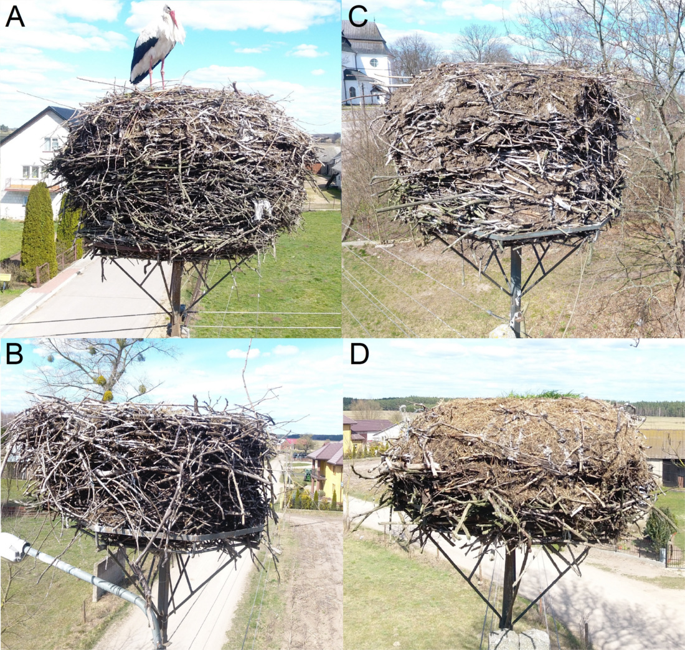
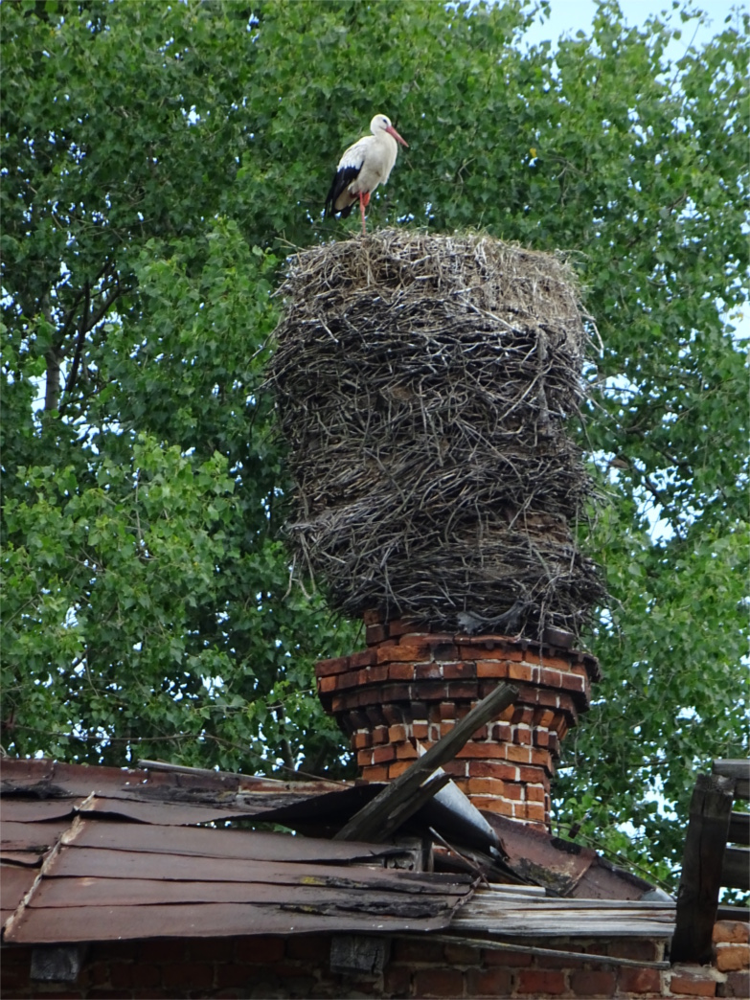

Bocian biały Ciconia ciconia gniazduje w bezpośredniej bliskości człowieka, często na dachach budynków, kominach, słupach energetycznych itp. Ponieważ bociany używają swoich gniazd przez wiele lat, i co roku je dobudowywują, mogą one osiągać ogromne rozmiary (wysokość i średnica do ponad 2 m, patrz fotografie poniżej) i masę ponad 1,5 tony. Stwarza to zagrożenie uszkodzeniem, a nawet zawaleniem się konstrukcji oraz zagraża bezpieczeństwu ludzi. Kluczowa w ocenie zagrożenia jest znajomość masy gniazda. Niniejszy kalkulator pozwala oszacować masę gniazda bociana z zaledwie dwóch pomiarów (wysokości i średnicy), które można wykonać z ziemi, np. z użyciem dalmierza. Pełne wyniki tego podejścia i więcej informacji o gniazdach bocianów i zastosowanej metodzie znajdziesz w artykule Zbyryt i inni (submitted)
By rozpocząć, wpisz wymiary gniazda (w centymetrach) w poniższe okienka i wybierz czy gniazdo jest ubite czy normalnej gęstości (patrz poniżej).
Wyświetlone zostaną wyniki dla trzech najlepszych równań (modeli) szacujących masę. Szacowana, przeciętna masa gniazda o podanych wymiarach wyświetlona jest w kolumnie „Średnia”. Dolne (po lewej stronie) i górne (po prawej stronie) kolumny zawierają predykcyjne przedziały ufności dla oszacowania średniej, na trzech predefiniowanych poziomach.
Przewidywana masa gniazda w kg
Dolny przedział ufności
Średnia
Górny przedział ufności
95%
90%
80%
80%
90%
95%
Wskaźnik ubicia gniazda. Opcja wyjściowa to gniazdo „normalne” (takie gniazda występują najczęściej, patrz fot. 1A i 1B poniżej), gniazda „ubite” charakteryzują się większą gęstością materiału gniazdowego (patrz Fot. 1C, 1D) – są cięższe, a równanie szacujące masę jest dla nich inne.
Fot. 1. Gniazda "normalne" (A, B) i "ubite" (C, D). Kliknij na fotografię aby powiększyć
Fot. 2. Używane przez wiele lat gniazda bocianów mogą osiągać 2 m wysokości i ważyć ponad 1,5 tony
Rekomendowany sposób cytowania kalkulatora:
Jeżeli korzystasz z kalkulatora w swoich opracowaniach, ekspertyzach, pracy naukowej, cytuj:
Zbyryt A., Dylewski Ł., Neubauer G. 2020. An on-line calculator for predicting white stork nest mass from its size. Available at:
Badania sfinansowano w ramach projektu LIFE 15 NAT/PL/000728 pt. "Ochrona bociana białego w dolinach rzecznych wschodniej Polski" realizowanego przez Polskie Towarzystwo Ochrony Ptaków

{kind=link}
{kind=link}